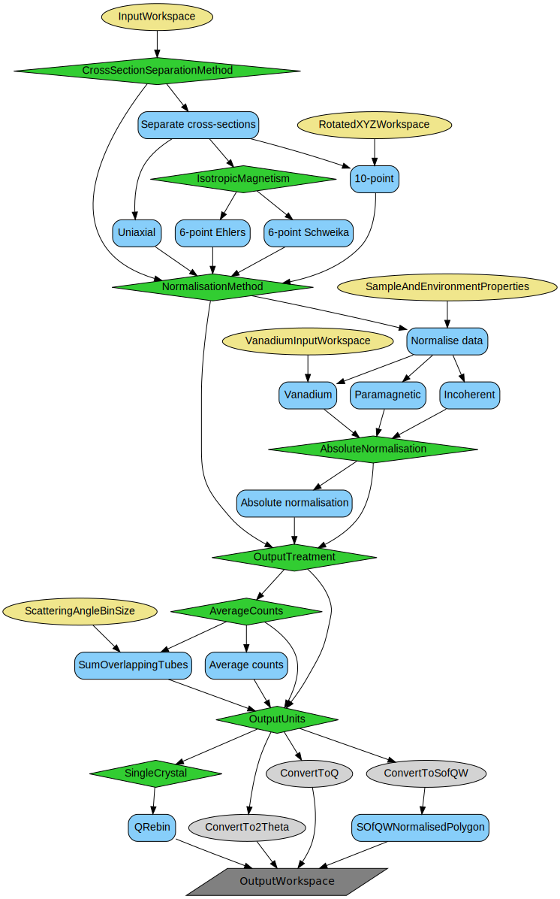

\(\renewcommand\AA{\unicode{x212B}}\)
Data reduction for D7 instrument at the ILL¶
There are three workflow algorithms supporting data reduction at ILL’s D7 polarised diffraction and spectroscopy instrument. These algorithms are:
- D7YIGPositionCalibration v1
Performs wavelength and position calibraiton for D7 instrument banks and individual detectors in banks.
- PolDiffILLReduction v1
Performs data reduction, including all desired corrections, and produces the input for the following cross-section separation and normalisation.
- D7AbsoluteCrossSections v1
Performs cross-section separation into nuclear coherent, spin-incoherent and magnetic components, does the data normalisation, and sets desired final units.
Together with the other algorithms and services provided by the Mantid framework, the reduction algorithms can handle a number of reduction scenarios. If this proves insufficient, however, the algorithms can be accessed using Python. Before making modifications it is recommended to copy the source files and rename the algorithms as not to break the original behavior.
This document tries to give an overview on how the algorithms work together via Python examples. Please refer to the algorithm documentation for details of each individual algorithm.
Reduction workflow and recommendations¶
A description of the usage of the algorithms for the D7 data reduction is presented along with several possible workflows, depending on the number of desired corrections, the type of normalisation, as well as the type of measurement that the data comes from (powder sample, single crystal, TOF).
Reduction basics¶
Note
To run these usage examples please first download the usage data, and add these to your path. In Mantid this is done using Manage User Directories.
A very basic powder data reduction would include a vanadium reference and a sample, without any corrections or position and wavelength calibration, and follow the following steps:
Reduce vanadium data.
Reduce sample data.
Run normalisation with vanadium reduction output as input.
# Define vanadium properties:
vanadiumProperties = {'SampleMass': 8.54, 'FormulaUnitMass': 50.94}
# Vanadium reduction
PolDiffILLReduction(Run='396993', ProcessAs='Vanadium', OutputTreatment='Sum',
OutputWorkspace='reduced_vanadium',
SampleAndEnvironmentProperties=vanadiumProperties)
# Define the number of formula units for the sample
sampleProperties = {'SampleMass': 2.932, 'FormulaUnitMass': 182.54}
# Sample reduction
PolDiffILLReduction(Run='397004', ProcessAs='Sample', OutputWorkspace='reduced_sample',
SampleAndEnvironmentProperties=sampleProperties)
# normalise sample and set the output to absolute units with vanadium
D7AbsoluteCrossSections(
InputWorkspace='reduced_sample',
OutputWorkspace='normalised_sample',
SampleAndEnvironmentProperties=sampleProperties,
NormalisationMethod='Vanadium',
VanadiumInputWorkspace='reduced_vanadium',
OutputUnits='TwoTheta')
SofQ = mtd['normalised_sample']
xAxis = SofQ[0].readX(0) # TwoTheta axis
print('dS/dOmega (TwoTheta) detector position range: {:.2f}...{:.2f} (degrees)'.format(xAxis[0], xAxis[-1]))
Output:
dS/dOmega (TwoTheta) detector position range: 13.14...144.06 (degrees)
Wavelength and position calibration¶
The first step of working with D7 data is to ensure that there exist a proper calibration of the wavelength, bank positions, and detector positions relative to their bank. This calibration can be either taken from a previous experiment performed in comparable conditions or obtained from the \(\text{Y}_{3}\text{Fe}_{5}\text{O}_{12}\) (YIG) scan data using a dedicated algorithm D7YIGPositionCalibration. The method follows the description presented in Ref. [1].
This algorithm performs wavelength and position calibration for both individual detectors and detector banks using measurement of a sample of powdered YIG. This data is fitted with Gaussian distributions at the expected peak positions. The output is an Instrument Parameter File readable by the LoadILLPolarizedDiffraction algorithm that will place the detector banks and detectors using the output of this algorithm.
The provided YIG d-spacing values are loaded from an XML list. The default d-spacing distribution for YIG available in Mantid in D7_YIG_peaks.xml file is coming from Ref. [2]. As long as this d-spacing list is sufficient and does not require changes, the YIGPeaksFile property does not need to be specified. The peak positions are converted into \(2\theta\) positions using the initial assumption of the neutron wavelength. YIG peaks in the detector’s scan are fitted separately using a Gaussian distribution.
The workspace containing the peak fitting results is then fitted using a Multidomain function of the form:
where m is the bank slope, \(offset_{\text{pixel}}\) is the relative offset to the initial assumption of the position inside the detector bank, and \(offset_{\text{bank}}\) is the offset of the entire bank. This function allows to extract the information about the wavelength, detector bank slopes and offsets, and the distribution of detector offsets.
It is strongly advised to first run the D7YIGPositionCalibration algorithm with the FittingMethod set to None, so that the initial guesses for the positions of the YIG Bragg peaks can be inspected and corrected if needed. Assuming the first python code-block below is used for this purpose, the workspace name to use for inspection of the initial guesses is named peak_fits_fitting_test. There, the initial guesses for individual detectors can be checked against the measured YIG Bragg peaks distribution. The correction can be done by changing the bank offsets, changing the desired peaks width and the minimal distance between them.
To save time in this iterative process, InputWorkspace property can be specified instead of Filenames. This way, the 2D distribution of measured intensities does not have to be created each time from loaded data but can be cached and reused for time saving. To profit from this feature, comment the Filenames property and uncomment the InputWorkspace in the first example below.
Example - D7YIGPositionCalibration - initial guess check before fitting at the shortest wavelength
approximate_wavelength = '3.1' # Angstrom
D7YIGPositionCalibration(
Filenames='402652:403041',
# InputWorkspace='conjoined_input_fitting_test',
ApproximateWavelength=approximate_wavelength,
YIGPeaksFile='D7_YIG_peaks.xml',
MinimalDistanceBetweenPeaks=1.5,
BraggPeakWidth=1.5,
BankOffsets=[0,0,0],
MaskedBinsRange=[-50, -25, 15],
FittingMethod='None',
ClearCache=False,
FitOutputWorkspace='fitting_test')
Example - D7YIGPositionCalibration - calibration at the shortest wavelength
approximate_wavelength = '3.1' # Angstrom
D7YIGPositionCalibration(Filenames='402652:403041', ApproximateWavelength=approximate_wavelength,
YIGPeaksFile='D7_YIG_peaks.xml', CalibrationOutputFile='test_shortWavelength.xml',
MinimalDistanceBetweenPeaks=1.5, BankOffsets=[3,3,-1],
MaskedBinsRange=[-50, -25, 15], FittingMethod='Global', ClearCache=True,
FitOutputWorkspace='shortWavelength')
print('The calibrated wavelength is: {0:.2f}'.format(float(approximate_wavelength)*mtd['shortWavelength'].column(1)[1]))
print('The bank2 gradient is: {0:.3f}'.format(1.0 / mtd['shortWavelength'].column(1)[0]))
print('The bank3 gradient is: {0:.3f}'.format(1.0 / mtd['shortWavelength'].column(1)[176]))
print('The bank4 gradient is: {0:.3f}'.format(1.0 / mtd['shortWavelength'].column(1)[352]))
Transmission calculation¶
The transmission (T) is calculated using counts measured by monitor 2 (M2) normalised to either measurement time or monitor 1, and according to the following formula:
where \(S\) is normalised M2 counts measured with the current sample, \(E_{Cd}\) is normalised counts when cadmium absorber is measured, and \(E\) is normalised counts from the direct beam.
The measurement of the cadmium absorber is optional and does not have to be provided as input for the transmission to be calculated. However, it allows to take into account dark currents in the readout system electronics and thus this measurement is advised to be included in transmission calculations.
It is possible to provide more than one numor as input for the transmission calculation. In such a case, the input workspaces are averaged.
The output of the transmission calculation is given as a WorkspaceGroup with a single workspace containing a single value of the calculated polarisation.
Instead of running the transmission calculation it is also possible to either provide a workspace with a single value or a floating-point value for the transmission to the workflows that require transmission.
Workflow diagrams and working example¶
Below are the relevant workflow diagrams describing reduction steps of the transmission calculation.
Absorber¶

Empty container¶

Transmission¶

Note
To run these usage examples please first download the usage data, and add these to your path. In Mantid this is done using Manage User Directories.
Example - transmission calculation for quartz sample
# Beam with cadmium absorber, used for transmission
PolDiffILLReduction(
Run='396991',
OutputWorkspace='cadmium_transmission_ws',
ProcessAs='BeamWithCadmium'
)
# Beam measurement for transmisison
PolDiffILLReduction(
Run='396983',
OutputWorkspace='beam_ws',
CadmiumTransmissionWorkspace='cadmium_transmission_ws',
ProcessAs='EmptyBeam'
)
print('Cadmium absorber transmission is {0:.3f}'.format(mtd['cadmium_transmission_ws_1'].readY(0)[0] / mtd['beam_ws_1'].readY(0)[0]))
# Quartz transmission
PolDiffILLReduction(
Run='396985',
OutputWorkspace='quartz_transmission',
CadmiumTransmissionWorkspace='cadmium_transmission_ws',
EmptyBeamWorkspace='beam_ws',
ProcessAs='Transmission'
)
print('Quartz transmission is {0:.3f}'.format(mtd['quartz_transmission_1'].readY(0)[0]))
Output:
Cadmium absorber transmission is 0.011
Quartz transmission is 0.700
Polarisation correction¶
The polarisation correction is estimated using quartz sample. The scattering is purely diffuse and, to a good approximation, non-spin flip. Ideally, the quartz should have the same geometry and attenuation as the sample as then the same gauge volume of the beam is measured and the reduction will give an accurate estimation of the polarizing efficiency. However, the correction is usually fairly insensitive to small differences in the polarizing efficiency and choosing the quartz to have the same outer dimensions is normally satisfactory. Multiple scattering is not a problem, as the correction is given by a ratio and there is no spin-flip scattering to depolarize the beam. The polarization efficiencies are calculated from ratios of non-spin-flip to spin-flip scattering, hence absolute numbers are not necessary.
First, the data is normalised to monitor 1 (M1) or measurement time. Then, if the necessary inputs of empty container and absorber (please note this is a different measurement than mentioned in the Transmission section) measurements are provided, the background can be subtracted from the data:
where \(\dot{I}\) denotes monitor or time-normalised quartz data, \(T\) is transmission, and \(\dot{E}\) and \(\dot{C}\) are the normalised counts measured with empty container and cadmium absorber, respectively.
In the case where either absorber or empty container inputs are not provided, this correction is not performed.
The data can be processed individually for all polarisation orientations available in the provided sample, or alternatively, the processing is done on averaged data. To process data averaged over polarisation orienantions, OutputTreatment property needs to be set to AveragePol. The alternative averaging is done over twoTheta positions of detectors, when OutputTreatment is set to AverageTwoTheta. In the latter case, the data is processed individually and averaged after polarisation correction is calculated.
Finally, the polariser-analyser efficiency can be calculated, using the following formula:
where \(f_{p}\) is the flipper efficiency, currently assumed to be 1.0, and \(\dot{I_{B}}(00)\) and \(\dot{I_{B}}(01)\) denote normalised and background-subtracted data with flipper states off and on respectively.
The output is given in as a WorkspaceGroup with the number of entries consistent with the number of measured polarisation directions. Each workspace in the group contains a single value of the polariser-analyser efficiency per detector. The flipping ratios are also available for inspection in a WorkspaceGroup named flipping_ratios.
Workflow diagram and working example¶
Below is the relevant workflow diagram describing reduction steps of the quartz reduction.

Note
To run these usage examples please first download the usage data, and add these to your path. In Mantid this is done using Manage User Directories.
Example - full treatment of a sample
# Beam with cadmium absorber, used for transmission
PolDiffILLReduction(
Run='396991',
OutputWorkspace='cadmium_transmission_ws',
ProcessAs='BeamWithCadmium'
)
# Beam measurement for transmisison
PolDiffILLReduction(
Run='396983',
OutputWorkspace='beam_ws',
CadmiumTransmissionWorkspace='cadmium_transmission_ws',
ProcessAs='EmptyBeam'
)
# Quartz transmission
PolDiffILLReduction(
Run='396985',
OutputWorkspace='quartz_transmission',
CadmiumTransmissionWorkspace='cadmium_transmission_ws',
EmptyBeamWorkspace='beam_ws',
ProcessAs='Transmission'
)
# Empty container
PolDiffILLReduction(
Run='396917',
OutputWorkspace='empty_ws',
ProcessAs='Empty'
)
# Absorber
PolDiffILLReduction(
Run='396928',
OutputWorkspace='cadmium_ws',
ProcessAs='Cadmium'
)
# Polarisation correction
PolDiffILLReduction(
Run='396939',
OutputWorkspace='pol_corrections',
CadmiumWorkspace='cadmium_ws',
EmptyContainerWorkspace='empty_ws',
Transmission='quartz_transmission',
OutputTreatment='AveragePol',
ProcessAs='Quartz'
)
SumSpectra(InputWorkspace='pol_corrections_ZPO_0', OutputWorkspace='sum',
StartWorkspaceIndex=0, EndWorkspaceIndex=131)
print("The average polarisation efficiency in the Z direction is {0:.2f}".format(mtd['sum'].readY(0)[0] / 132.0))
Output:
The average polarisation efficiency in the Z direction is 0.90
Vanadium data reduction¶
Vanadium provides a measure of the relative detector efficiencies and its count rate can be used for the calibration of sample data to absolute units. Multiple scattering and sample self-attenuation are issues here and the correction works best if the vanadium has, as close as possible, the same attenuation and shape as the sample.
The scattering from the vanadium is considered to be purely elastic scattering and the cross-section considered to be purely due to the nuclear spin-incoherent contribution. The reduced vanadium data can be used to normalise the results of the sample data reduction in D7AbsoluteCrossSections. The vanadium data can also be used as a consistency check for polarization and multiple scattering corrections.
If the sample has a large nuclear-spin-incoherent cross-section, this separated cross-section can be used as a self-correction for detector efficiency and even for shape effects from the sample. If the sample stoichiometry is well-known and an accurate estimate for the nuclear-spin-incoherent cross-section can be derived, this cross-section can be used to express the sample data in absolute units. In this case, the vanadium cross-section is unnecessary.
For the best results of using the reduced vanadium data as input for sample data normalisation, the OutputTreatment property of the PolDiffILLReduction algorithm needs to be set to Sum. Alternatively, it is possible to inspect data for diagnostic purposes by setting the OutputTreatment property to either AveragePol for averaging over polarisation orientations, or AverageTwoTheta to obtain an average over twoTheta positions.
Reduction workflow¶
The first two steps of the reduction of vanadium data are the same as for quartz, with normalisation to the monitor or time, and background subtraction (provided the necessary inputs). This is followed by polarisation correction, frame-overlap correction (optional in the TOF mode), self-attenuation correction, detector energy-efficiency correction (optional in the TOF mode), and finally normalisation to either relative or absolute scale. In the case of relative scale, the counts are normalised to the number of polarisation directions (e.g. one in the Z method, three for the XYZ, etc. ). For the absolute scale normalisation, the number of moles and the total expected cross-section is also taken into account.
Background subtraction¶
Background subtraction is straight-forward in case of a diffraction experiment, where it is perfomed in the way described in the Quartz reduction. However, in the case of Time-of-flight experiment, this approach is not sufficient. There, background is split into time-independent (\(B_{\mathrm{indep}}\)) and time-dependent (\(B_{\mathrm{dep}}\)) contributions. Time-independent contribution is calculated as an average of counts of the background source (either empty container or vanadium measurement itself) in time channels outside of the elastic peak region. There are three possible ways to take into account the time-dependent contribution available in the PolDiffILLReduction, depending on the selection of SubtractTOFBackgroundMethod, which follows formulas given below.
Data and Rectangular options
Both of these method will use the following equation to establish time-dependent background:
\[B_{dep} = T \left( E (\#, \mathrm{chn} = \mathrm{chn(el)}) - B_{\mathrm{indep}} \right),\]where T is sample transmission, E is distribution of counts as measured for the empty container (or vanadium) if the SubtractTOFBackgroundMethod is set to Data, or E is an average of the measured background distribution in the elastic peak region, if the property is set to Rectangular, chn(el) signifies the region around the elastic peak, and \(B_{\mathrm{indep}}\) is the time-independent background.
Then, regardless of the SubtractTOFBackgroundMethod choice, the time-dependent and time-independent background contributions are subtracted from the sample counts as follows:
\[I_{B} (\#, chn) = I (\#, chn) - B_{dep} - B_{indep},\]where \(I_{B} (\#, chn)\) is the intensity after background is subtracted, and \(I (\#, chn)\) is the current sample distribution before background subtraction.
Gaussian option
The approach when Gaussian option is set for the SubtractTOFBackgroundMethod property is similar to previously described solution, with a significant change, where the E distribution is substituted by sample data itself. The background subtraction in that case is as follows:
\[ \begin{align}\begin{aligned}I_{B} (\#, \mathrm{chn} \ne \mathrm{chn(el)}) &= I (\#, \mathrm{chn}) - B_{\mathrm{indep}},\\I_{B} (\#, \mathrm{chn} = \mathrm{chn(el)}) &= T \left( I (\#, \mathrm{chn} = \mathrm{chn(el)}) - B_{\mathrm{indep}} \right) - G (\#, \mathrm{chn} = \mathrm{chn(el)}),\end{aligned}\end{align} \]where \(G (\#, \mathrm{chn} = \mathrm{chn(el)})\) is a gaussian distribution matched to the background source, so that the centre of the distribution falls at the position of the elastic peak, the width matches with the elastic peak region width, and the counts of the background source are preserved. G is generated for each time channel or time-of-flight value in the elastic peak region as follows:
\[G (\#) = \frac{A}{\sigma \sqrt{2\pi}} \mathrm{exp} \left( -\frac{1}{2} \left(\frac{chn - chn_{el}}{\sigma}\right)^{2} \right),\]where A is the total counts of the background source in the elastic peak region, \(\sigma\) is the half-width of the elastic peak region, chn is the time-of-flight or time channel value of a bin in the elastic peak region, \(chn_{el}\) is the position of the elastic peak.
Polarisation correction¶
The polarisation efficiency of the instrument can be corrected using the previously reduced quartz data. The correction is applied according to the following formula:
where \(\dot{I_{B}}(+)\) and \(\dot{I_{B}}(-)\) denote the spin-flip and the non-spin-flip scattering events, respectively, and \(\dot{I_{B}}(0)\) and \(\dot{I_{B}}(1)\) are the events with the flipper state on and off, respectively.
Frame-overlap correction¶
This correction is relevant only in the TOF reduction mode.
Frame overlap correction can be performed based on the status of the FrameOverlapCorrection property of PolDiffILLReduction, and by default it is applied to data.
The frame-overlap is calculated for each detector using the following formula:
where \(t_{max}\) is the maximum time in the current frame, \(t_{prev}\) is the time calculated from the previous frame, which depends on the rotation period of the Fermi Chopper, \(N_{ch}\) is the number of time channels, \(n\) is the number of time channels at the end of the frame used for calculating an average, set to 15, and \(I (\#, i)\) are counts for \(\#\) detector in the \(i\)-th time channel.
Self-attenuation correction¶
There are several ways the self-attenuation of a sample can be taken into account in the implemented D7 reduction: None, Transmission, Numerical, MonteCarlo, and User. In the first case, no corrections are calculated nor applied to data. In the second, the transmission value is used to scale all detector counts by the transmission value. In the three final cases, the correction is applied to data with ApplyPaalmanPingsCorrection algorithm.
The User option depends on the self-attenuation parameters provided by the user through SampleSelfAttenuationFactors property of the PolDiffILLReduction algorithm. This option allows to study the self-attenuation of a sample that can have arbitrary shape separately from running the reduction algorithm, and in more detail if necessary.
On the contrary, The Numerical and MonteCarlo options calculate the self-attenuation parameters for both the sample and its container during the execution of the reduction algorithm. These two options depend on Mantid algorithms PaalmanPingsAbsorptionCorrection and PaalmanPingsMonteCarloAbsorption, respectively. These two algorithms require multiple parameters describing the sample and its environment, such as the geometry, density, and chemical composition to be defined. The communication of these parameters is done via SampleAndEnvironmentProperties property of the PolDiffILLReduction algorithm. All the necessary and accepted keys that need to be defined for the sample self-attenuation to be properly corrected are described below.
The SampleAndEnvironmentProperties property of the PolDiffILLReduction algorithm is a dictionary containing all of the information about the sample and its environment. This information is used in self-attenuation calculations and also can be reused in data normalisation in the D7AbsoluteCrossSections algorithm.
The complete list of keys can is summarised below:
Sample-only keys:
SampleMass
FormulaUnitMass
SampleChemicalFormula
SampleDensity
Height
The first three keys need to be always defined, so that the number of moles of the sample can be calculated, to ensure proper data normalisation. The sample and container density parameters are in units of mass density.
Container-only keys:
ContainerChemicalFormula
ContainerDensity
Optional beam-only keys, if not user-defined will be automatically defined to be larger than the sample dimensions:
BeamHeight
BeamWidth
Then, depending on the chosen sample geometry, additional parameters need to be defined:
For FlatPlate:
SampleThickness
SampleWidth
SampleCenter
SampleAngle
ContainerFrontThickness
ContainerBackThickness
For Cylinder:
SampleRadius
ContainerRadius
For Annulus:
SampleInnerRadius
SampleOuterRadius
ContainerInnerRadius
ContainerOuterRadius
Depending on the choice of the self-attenuation method, either ElementSize in case of numerical calculations or EventsPerPoint for Monte-Carlo method need to be defined.
Optional keys:
InitialEnergy - if not provided, the value will be calculated from the wavelength in the SampleLogs
NMoles - if not provided, the value will be calculated based on the SampleMass and FormulaUnitMass
Detector and analyser energy efficiency corrections¶
This correction is relevant only in the TOF reduction mode.
The detector energy efficiency correction is performed only if ConvertToEnergy property is checked, and only when DetectorEnergyEfficiencyCorrection property of PolDiffILLReduction is set to True. By default it is applied to data.
The data needs to have elastic peak positions calibrated before the detector efficiency can be performed. Positions of elastic peaks for each detector and their widths are obtained using FindEPP algorithm or from the user input via EPCentre and EPWidth valuees provided through SampleAndEnvironmentProperties. Missing values of widths, in cases where the gaussian fit was not successful, are padded with the average width calculated from available peak widths. The fitting is done when the X-axis is still in TOF units.
Detector efficiency correction algorithm, DetectorEfficiencyCorUser, requires the X-axis unit to be DeltaE (energy exchange), therefore if ConvertToEnergy property is set to False, this correction cannot be performed and is skipped. Unit conversion from TOF units to DeltaE is handled by ConvertUnits. The following formula is used to correct for detector energy efficiency:
where:
where in turn, the \(f(E_{i})\) for D7 is:
where the constant value of -13.153 is derived from multiplying the pressure of detector tubes (10 Pa), their diameter (2.54 cm), and a factor of −0.51784, obtained by D7 responsible scientists using Monte Carlo simulations.
The analyser energy correction is a multiplicative correction, applied after the detector efficiency is taken into account, if the PerformAnalyserTrCorrection property is checked. The correction factor is a ratio of the analyser transmission for the elastic energy and the final energy corresponding to each bin (after conversion from time channels to energy exchange). The distribution of analyser transmission values as a function of wavelength (or, equivalently, energy) are coming from Monte Carlo simulations performed by D7 scientists, and are shown in Fig. 9 of Ref. [4].
Correction factors are obtained by using an output from a fit to the data from Fig. 9 in [4]. A composite function of two hiperbolic tangents has been fitted to the data outside of Mantid, with a total of 6 parameters and the following form:
which was found to reproduce MonteCarlo simulations well in the wavelength range from 0.5 \(\AA\) to 10 \(\AA\).
Then, the parameters of this fit are used to calculate the analyser transmission for the initial energy and for each bin energy in the workspace that is to be corrected. A ratio between the analyser transmission for the initial energy and final energies of each bin is calculated and thus obtained workspace is then used as a multiplicative correction of the current sample data.
Output¶
The corrected counts in each each detector are normalised to the expected total cross-section for vanadium of \(0.404 \frac{\text{barn}}{\text{steradian} \cdot \text{atom}}\). The output of vanadium reduction is a WorkspaceGroup with one entry if the OutputTreatment is set to Sum, or the same number of entries as input data if Individual was selected. In the case of TOF reduction mode, vanadium counts are integrated around the elastic peak position for each detector before normalisation to the expected cross-section.
In case it is desireable to separate cross-sections, for example for diagnostic purposes, it can be done using the reduced data described as above using D7AbsoluteCrossSections algorithm. More details on working with this algorithm are given in the sample normalisation section.
In the case of TOF reduction mode, an additional output is created, which contains fitted elastic peak positions and their widths. This is subsequently used in calibrating sample data elastic peak positions.
Workflow diagrams and working example¶
Below is the relevant workflow diagram describing reduction steps of the vanadium reduction.

Note
To run these usage examples please first download the usage data, and add these to your path. In Mantid this is done using Manage User Directories.
Example - Vanadium reduction with annulus geometry
vanadium_dictionary = {'SampleMass':8.54,'FormulaUnitMass':50.94,'SampleChemicalFormula':'V',
'Height':2.0,'SampleDensity':6.1,'SampleInnerRadius':2.0, 'SampleOuterRadius':2.49,
'BeamWidth':2.5,'BeamHeight':2.5,
'ContainerChemicalFormula':'Al','ContainerDensity':2.7,'ContainerOuterRadius':2.52,
'ContainerInnerRadius':1.99, 'EventsPerPoint':1000}
calibration_file='D7_YIG_calibration.xml' # example calibration file
# Beam with cadmium absorber, used for transmission
PolDiffILLReduction(
Run='396991',
OutputWorkspace='cadmium_transmission_ws',
ProcessAs='BeamWithCadmium'
)
# Beam measurement for transmisison
PolDiffILLReduction(
Run='396983',
OutputWorkspace='beam_ws',
CadmiumTransmissionWorkspace='cadmium_transmission_ws',
ProcessAs='EmptyBeam'
)
# Quartz transmission
PolDiffILLReduction(
Run='396985',
OutputWorkspace='quartz_transmission',
CadmiumTransmissionWorkspace='cadmium_transmission_ws',
EmptyBeamWorkspace='beam_ws',
ProcessAs='Transmission'
)
# Empty container
PolDiffILLReduction(
Run='396917',
OutputWorkspace='empty_ws',
ProcessAs='Empty'
)
# Absorber
PolDiffILLReduction(
Run='396928',
OutputWorkspace='cadmium_ws',
ProcessAs='Cadmium'
)
# Polarisation correction
PolDiffILLReduction(
Run='396939',
OutputWorkspace='pol_corrections',
CadmiumWorkspace='cadmium_ws',
EmptyContainerWorkspace='empty_ws',
Transmission='quartz_transmission',
OutputTreatment='AveragePol',
ProcessAs='Quartz'
)
# Vanadium transmission
PolDiffILLReduction(
Run='396990',
OutputWorkspace='vanadium_transmission',
CadmiumTransmissionWorkspace='cadmium_transmission_ws',
EmptyBeamWorkspace='beam_ws',
ProcessAs='Transmission'
)
print('Vanadium transmission is {0:.3f}'.format(mtd['vanadium_transmission_1'].readY(0)[0]))
# Vanadium reduction
PolDiffILLReduction(
Run='396993',
OutputWorkspace='vanadium_ws',
CadmiumWorkspace='cadmium_ws',
EmptyContainerWorkspace='empty_ws',
Transmission='vanadium_transmission',
QuartzWorkspace='pol_corrections',
OutputTreatment='Sum',
SelfAttenuationMethod='MonteCarlo',
SampleGeometry='Annulus',
SampleAndEnvironmentProperties=vanadium_dictionary,
InstrumentCalibration=calibration_file,
ProcessAs='Vanadium'
)
print("The vanadium reduction output contains {} entry with {} spectra and {} bin.".format(mtd['vanadium_ws'].getNumberOfEntries(),
mtd['vanadium_ws'][0].getNumberHistograms(), mtd['vanadium_ws'][0].blocksize()))
Output:
Vanadium transmission is 0.886
The vanadium reduction output contains 1 entry with 132 spectra and 1 bin.
Example - Vanadium reduction in the TOF mode
vanadium_dictionary = {'SampleMass': 8.54, 'FormulaUnitMass': 50.94}
calibration_file='D7_YIG_calibration_TOF.xml' # example calibration file
# Vanadium reduction
PolDiffILLReduction(
Run='396016',
OutputWorkspace='vanadium_ws',
Transmission='0.945',
OutputTreatment='Sum',
SelfAttenuationMethod='None',
SampleGeometry='None',
SampleAndEnvironmentProperties=vanadium_dictionary,
InstrumentCalibration=calibration_file,
MeasurementTechnique='TOF',
ProcessAs='Vanadium'
)
print("The vanadium reduction output contains {} entry with {} spectra and {} bin.".format(mtd['vanadium_ws'].getNumberOfEntries(),
mtd['vanadium_ws'][0].getNumberHistograms(), mtd['vanadium_ws'][0].blocksize()))
ep_positions = np.array(mtd['vanadium_ws_elastic'].column('PeakCentre'))
print("The average vanadium-derived elastic peak position falls at {0:.0f} microseconds.".format(np.mean(ep_positions)))
Output:
The vanadium reduction output contains 1 entry with 132 spectra and 1 bin.
The average vanadium-derived elastic peak position falls at 1553 microseconds.
Sample data reduction¶
The sample data reduction follows the same steps of monitor or time normalisation, background subtraction, polarisation correction, and self-attenuation correction as vanadium data reduction. Should the self-attenuation correction be taken into account, the relevant sample and environment parameters need to be defined in a dictionary that is provided to SampleAndEnvironmentProperty with keys described in the vanadium reduction section. The extra keys, required by D7AbsoluteCrossSections and relevant only for the SingleCrystal reduction are:
KiXAngle - the angle between the incident momentum and the Sharpf angle,
OmegaShift - omega offset of the sample.
The output of the is a WorkspaceGroup with the number of entries equal to number of measured polarisations times number of steps in a \(2\theta\) scan. This output can be provided to D7AbsoluteCrossSections for cross-section separation, e.g. for diagnostic purposes, or for the final normalisation.
Frame-overlap correction¶
This correction is relevant only in the TOF reduction mode and is performed the same way as for the vanadium data.
Detector efficiency correction¶
This correction is relevant only in the TOF reduction mode and is performed the same way as for the vanadium data.
Cross-section separation¶
The D7AbsoluteCrossSections algorithm allows for either cross-section separation or sample data normalisation. It is possible to use only one of the possibilities, for example, to separate cross-sections of the reduced vanadium data without the normalisation subroutines to be invoked. This is especially useful for diagnostic purposes.
The cross-section separation is done according to formulae presented in Ref. [3] [4] [5]. More details on the exact calculations is given in documentation of the D7AbsoluteCrossSections algorithm. It is possible to perform uniaxial, 6-point (or XYZ), and 10-point measurement separation of magnetic, nuclear coherent, and nuclear-spin-incoherent components of the total measured scattering cross-section. The specifics of the 10-point measurement as a set of two separate 6-point measurements are taken into account. In that case, the second set of 6-point data needs to be provided to RotatedXYZWorkspace property of the D7AbsoluteCrossSections algorithm, and the ‘10-p’ needs to be chosen as the CrossSectionSeparationMethod.
In the case of SingleCrystal measurements, cross-section separation can be performed following Ref. [6] formulae, which apply in the case of anisotropic magnetism. The relevant property to be checked as False is IsotropicMagnetism of the D7AbsoluteCrossSections algorithm.
Sample data normalisation¶
The output from sample data reduction still needs to be normalised to the relevant standard to set the units to absolute scale. The normalisation is handled by D7AbsoluteCrossSections algorithm, and there are three options available to normalise the sample data:
Vanadium normalisation
Uses output from the vanadium data reduction. The units chosen for both the sample and vanadium data during reduction should agree.
Paramagnetic normalisation
This normalisation approach uses the output from the cross-section separation to set the sample output to absolute units. An additional parameter needs to be defined in the sample properties dictionary, named SampleSpin, to define the spin of the sample.
Spin-incoherent normalisation
This normalisation approach also uses the output from the cross-section separation. If the goal is to set the output data to absolute scale, an additional parameter needs to be defined in the sample properties dictionary, named IncoherentCrossSection, to provide the total nuclear-spin-incoherent cross-section of the sample.
Output¶
The output of the reduction and normalisation is a WorkspaceGroup with the number of entries consistent with the input if the OutputTreatment property was selected to be Individual, or the number of entries will be consistent with either the number of polarisation orientations present in the data (e.g. six for a XYZ method) or the number of separated cross-section. Each entry of the output group is a workspace with X-axis unit being either momentum exchange \(Q\), the scattering angle \(2\theta\), or, in the case of SingleCrystal reduction, cross-section values on a \(Q_{x}\) - \(Q_{y}\) plane.
Workflow diagrams and working example¶
Below is the relevant workflow diagram describing reduction steps of the sample reduction and normalisation.
Sample reduction¶

Sample normalisation¶
Note
To run these usage examples please first download the usage data, and add these to your path. In Mantid this is done using Manage User Directories.
Example - Complete sample reduction with normalisation
vanadium_dictionary = {'SampleMass':8.54,'FormulaUnitMass':50.94}
sample_dictionary = {'SampleMass':2.932,'SampleDensity':7.8,'FormulaUnitMass':182.56,
'SampleChemicalFormula':'Mn0.5-Fe0.5-P-S3','Height':2.0,
'SampleInnerRadius':2.0, 'SampleOuterRadius':2.49,'BeamWidth':2.5,'BeamHeight':2.5,
'ContainerChemicalFormula':'Al','ContainerDensity':2.7,'ContainerOuterRadius':2.52,
'ContainerInnerRadius':1.99, 'ElementSize':0.5}
calibration_file = 'D7_YIG_calibration.xml'
# Beam with cadmium absorber, used for transmission
PolDiffILLReduction(
Run='396991',
OutputWorkspace='cadmium_transmission_ws',
NormaliseBy='Monitor',
ProcessAs='BeamWithCadmium'
)
# Beam measurement for transmisison
PolDiffILLReduction(
Run='396983',
OutputWorkspace='beam_ws',
CadmiumTransmissionWorkspace='cadmium_transmission_ws',
NormaliseBy='Monitor',
ProcessAs='EmptyBeam'
)
# Quartz transmission
PolDiffILLReduction(
Run='396985, 396986',
OutputWorkspace='quartz_transmission',
CadmiumTransmissionWorkspace='cadmium_transmission_ws',
EmptyBeamWorkspace='beam_ws',
NormaliseBy='Monitor',
ProcessAs='Transmission'
)
# Empty container
PolDiffILLReduction(
Run='396917, 396918',
OutputWorkspace='empty_ws',
NormaliseBy='Monitor',
ProcessAs='Empty'
)
# Cadmium absorber
PolDiffILLReduction(
Run='396928, 396929',
OutputWorkspace='cadmium_ws',
NormaliseBy='Monitor',
ProcessAs='Cadmium'
)
# Polarisation correction
PolDiffILLReduction(
Run='396939, 396940',
OutputWorkspace='pol_corrections',
CadmiumWorkspace='cadmium_ws',
EmptyContainerWorkspace='empty_ws',
Transmission='quartz_transmission',
OutputTreatment='AveragePol',
NormaliseBy='Monitor',
ProcessAs='Quartz'
)
# Vanadium transmission
PolDiffILLReduction(
Run='396990',
OutputWorkspace='vanadium_transmission',
CadmiumTransmissionWorkspace='cadmium_transmission_ws',
EmptyBeamWorkspace='beam_ws',
NormaliseBy='Monitor',
ProcessAs='Transmission'
)
# Vanadium reduction
PolDiffILLReduction(
Run='396993, 396994',
OutputWorkspace='vanadium_ws',
CadmiumWorkspace='cadmium_ws',
EmptyContainerWorkspace='empty_ws',
Transmission='vanadium_transmission',
QuartzWorkspace='pol_corrections',
OutputTreatment='Sum',
SampleGeometry='None',
SampleAndEnvironmentProperties=vanadium_dictionary,
AbsoluteNormalisation=True,
InstrumentCalibration=calibration_file,
NormaliseBy='Monitor',
ProcessAs='Vanadium'
)
# Sample transmission
PolDiffILLReduction(
Run='396986, 396987',
OutputWorkspace='sample_transmission',
CadmiumTransmissionWorkspace='cadmium_transmission_ws',
EmptyBeamWorkspace='beam_ws',
NormaliseBy='Monitor',
ProcessAs='Transmission'
)
print('Sample transmission is {0:.3f}'.format(mtd['sample_transmission_1'].readY(0)[0]))
# Sample reduction
PolDiffILLReduction(
Run='397004, 397005',
OutputWorkspace='sample_ws',
CadmiumWorkspace='cadmium_ws',
EmptyContainerWorkspace='empty_ws',
Transmission='sample_transmission',
QuartzWorkspace='pol_corrections',
OutputTreatment='Individual',
InstrumentCalibration=calibration_file,
SelfAttenuationMethod='Numerical',
SampleGeometry='Annulus',
SampleAndEnvironmentProperties=sample_dictionary,
NormaliseBy='Monitor',
ProcessAs='Sample'
)
print("The reduced sample data contains {} entries with {} spectra and {} bins.".format(mtd['sample_ws'].getNumberOfEntries(),
mtd['sample_ws'][0].getNumberHistograms(), mtd['sample_ws'][0].blocksize()))
# Normalise sample data
D7AbsoluteCrossSections(
InputWorkspace='sample_ws',
OutputWorkspace='sample_norm',
CrossSectionSeparationMethod='None',
NormalisationMethod='Vanadium',
VanadiumInputWorkspace='vanadium_ws',
OutputTreatment='Merge',
OutputUnits='TwoTheta',
ScatteringAngleBinSize=1.0, # degrees
SampleAndEnvironmentProperties=sample_dictionary,
AbsoluteUnitsNormalisation=False
)
print("The normalised sample data contains {} entries with {} spectrum and {} bins.".format(mtd['sample_norm'].getNumberOfEntries(),
mtd['sample_norm'][0].getNumberHistograms(), mtd['sample_norm'][0].blocksize()))
Output:
Sample transmission is 0.963
The reduced sample data contains 12 entries with 132 spectra and 1 bins.
The normalised sample data contains 6 entries with 1 spectrum and 134 bins.
Example - full treatment of a single crystal sample
vanadium_mass = 8.535
sample_formula_mass = 137.33 * 2.0 + 54.93 + 127.6 + 15.999 * 6.0
sample_mass = 7.83
vanadium_dictionary = {'SampleMass': vanadium_mass, 'FormulaUnits': 1, 'FormulaUnitMass': 50.942}
sample_dictionary = {'SampleMass': sample_mass, 'FormulaUnits': 1, 'FormulaUnitMass': sample_formula_mass,
'KiXAngle': 45.0, 'OmegaShift': 52.5}
calibration_file = "D7_YIG_calibration.xml"
# Empty container for quartz and vanadium
PolDiffILLReduction(
Run='450747:450748',
OutputWorkspace='container_ws',
ProcessAs='Empty'
)
# Empty container for bank position 1 (bt1), tth=79.5
PolDiffILLReduction(
Run='397406:397407',
OutputTreatment='AveragePol',
OutputWorkspace='container_bt1_ws',
ProcessAs='Empty'
)
# empty container for bt2, tth=75
PolDiffILLReduction(
Run='397397:397398',
OutputTreatment='AveragePol',
OutputWorkspace='container_bt2_ws',
ProcessAs='Empty'
)
PolDiffILLReduction(
Run='450769:450770',
OutputWorkspace='pol_corrections',
EmptyContainerWorkspace='container_ws',
Transmission='0.9',
OutputTreatment='AveragePol',
ProcessAs='Quartz'
)
PolDiffILLReduction(
Run='450835:450836',
OutputWorkspace='vanadium_ws',
EmptyContainerWorkspace='container_ws',
Transmission='0.89',
QuartzWorkspace='pol_corrections',
OutputTreatment='Sum',
SampleGeometry='None',
SelfAttenuationMethod='Transmission',
SampleAndEnvironmentProperties=vanadium_dictionary,
AbsoluteNormalisation=True,
InstrumentCalibration=calibration_file,
ProcessAs='Vanadium'
)
# bank position 1, tth=79.5
PolDiffILLReduction(
Run='399451:399452',
OutputWorkspace='bt1',
EmptyContainerWorkspace='container_bt1_ws',
Transmission='0.95',
QuartzWorkspace='pol_corrections',
OutputTreatment='Individual',
SampleGeometry='None',
SampleAndEnvironmentProperties=sample_dictionary,
MeasurementTechnique='SingleCrystal',
InstrumentCalibration=calibration_file,
ProcessAs='Sample'
)
# bank position 2, tth=75
PolDiffILLReduction(
Run='400287:400288',
OutputWorkspace='bt2',
EmptyContainerWorkspace='container_bt2_ws',
Transmission='0.95',
QuartzWorkspace='pol_corrections',
OutputTreatment='Individual',
SampleGeometry='None',
SampleAndEnvironmentProperties=sample_dictionary,
MeasurementTechnique='SingleCrystal',
InstrumentCalibration=calibration_file,
ProcessAs='Sample'
)
appended_ws = 'appended_ws'
AppendSpectra(InputWorkspace1='bt1', InputWorkspace2='bt2',
OutputWorkspace=appended_ws)
# names need to be re-set, AppendSpectra just concatenates them
possible_polarisations = ['ZPO_ON', 'ZPO_OFF', 'XPO_ON', 'XPO_OFF', 'YPO_ON', 'YPO_OFF']
polarisation = ""
for entry in mtd[appended_ws]:
entry_name = entry.name()
for polarisation in possible_polarisations:
if polarisation in entry_name:
break
RenameWorkspace(InputWorkspace=entry, OutputWorkspace="{}_{}".format(appended_ws, polarisation))
D7AbsoluteCrossSections(
InputWorkspace=appended_ws,
OutputWorkspace='normalized_single_crystal_XYZ',
CrossSectionSeparationMethod='XYZ',
NormalisationMethod='Vanadium',
VanadiumInputWorkspace='vanadium_ws',
OutputUnits='Qxy',
SampleAndEnvironmentProperties=sample_dictionary,
AbsoluteUnitsNormalisation=False,
IsotropicMagnetism=False,
MeasurementTechnique='SingleCrystal',
ClearCache=True
)
Example - full treatment of a sample in TOF mode
# based on logbook from exp_6-02-594, cycle 193
vanadium_mass = 6.11 * 4.0 * np.pi * (0.6**2 - 0.4**2)
formula_weight_H2O = 1.008 * 2 + 15.999 # NIST
sample_mass_H2O = 0.874
sample_formula_H2O = 'H2O'
sample_thickness_H2O = 1.95
max_tof_channel = 511
vanadium_dictionary = {'SampleMass':vanadium_mass, 'FormulaUnitMass':50.942}
sample_dictionary_H2O = {'SampleMass':sample_mass_H2O, 'FormulaUnitMass':formula_weight_H2O, 'SampleChemicalFormula':sample_formula_H2O}
masked_detectors = []
yig_calibration_file = "D7_YIG_calibration_TOF.xml"
# Beam measurement for transmission
PolDiffILLReduction(
Run='395557',
OutputWorkspace='beam_ws',
ProcessAs='EmptyBeam'
)
PolDiffILLReduction(
Run='395566',
OutputWorkspace='beam_ws_2',
ProcessAs='EmptyBeam'
)
# empty container
PolDiffILLReduction(
Run='396036:396155',
OutputTreatment='AveragePol',
OutputWorkspace='container_ws',
ProcessAs='Empty',
MeasurementTechnique='TOF',
MaxTOFChannel=500,
MaskDetectors=masked_detectors,
)
# Quartz has not been measured
# Vanadium transmission
PolDiffILLReduction(
Run='395564',
OutputWorkspace='vanadium_tr',
EmptyBeamWorkspace='beam_ws',
ProcessAs='Transmission'
)
# Vanadium reduction
PolDiffILLReduction(
Run='396016:396034',
OutputWorkspace='vanadium_ws',
EmptyContainerWorkspace='container_ws',
Transmission='vanadium_tr',
SubtractTOFBackgroundMethod='Data',
OutputTreatment='Sum',
SelfAttenuationMethod='None',
SampleGeometry='None',
AbsoluteNormalisation=False,
SampleAndEnvironmentProperties=vanadium_dictionary,
MeasurementTechnique='TOF',
ProcessAs='Vanadium',
InstrumentCalibration=yig_calibration_file,
MaskDetectors=masked_detectors,
MaxTOFChannel=500,
FrameOverlapCorrection=True,
DetectorEnergyEfficiencyCorrection=True,
ConvertToEnergy=True,
ClearCache=True
)
# H2O transmissions
PolDiffILLReduction(
Run='395560,395561', # 0 and 90 degrees
OutputWorkspace='h2O_1cm_tr',
EmptyBeamWorkspace='beam_ws',
ProcessAs='Transmission'
)
# Sample reduction
# water reduction
PolDiffILLReduction(
Run="395639:395798",
OutputWorkspace='h2O_ws',
EmptyContainerWorkspace='container_ws',
Transmission='h2O_1cm_tr',
SubtractTOFBackgroundMethod='Gaussian',
OutputTreatment='AveragePol',
SampleGeometry='None',
SampleAndEnvironmentProperties=sample_dictionary_H2O,
MeasurementTechnique='TOF',
InstrumentCalibration=yig_calibration_file,
ElasticChannelsWorkspace='vanadium_ws_elastic',
MaskDetectors=masked_detectors,
MaxTOFChannel=500,
FrameOverlapCorrection=True,
DetectorEnergyEfficiencyCorrection=True,
ConvertToEnergy=True,
ProcessAs='Sample'
)
D7AbsoluteCrossSections(
InputWorkspace='h2O_ws',
OutputWorkspace='h2O_red',
CrossSectionSeparationMethod='Uniaxial',
NormalisationMethod='Vanadium',
VanadiumInputWorkspace='vanadium_ws',
OutputUnits='Qw',
SampleAndEnvironmentProperties=sample_dictionary_H2O,
AbsoluteUnitsNormalisation=False,
MeasurementTechnique='TOF',
ClearCache=True
)
References¶
Category: Techniques